Ninety acres of heritage grain, pastured ground, and no-till soil in the Willow Valley — farmed the way our grandparents did, with a little more science behind it.
Hover over any image to pause movement and explore daily field routines, heritage grain harvests, and greenhouse rows.
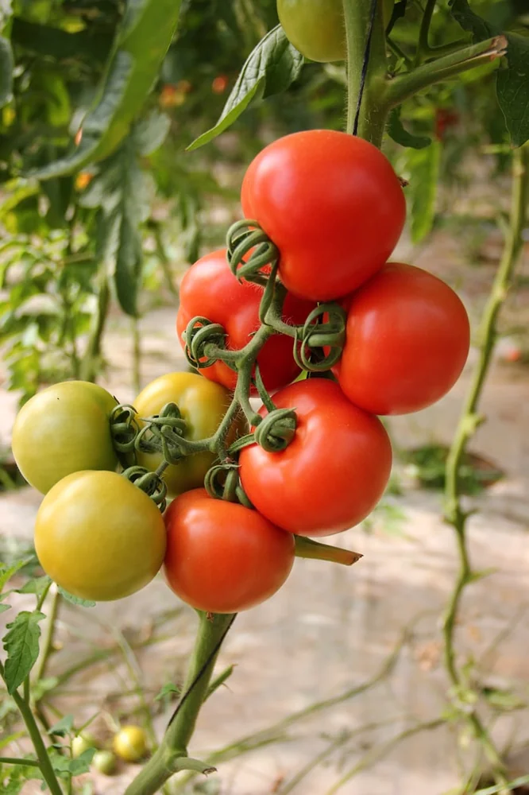
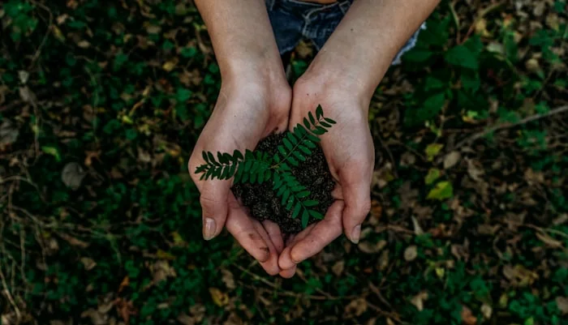
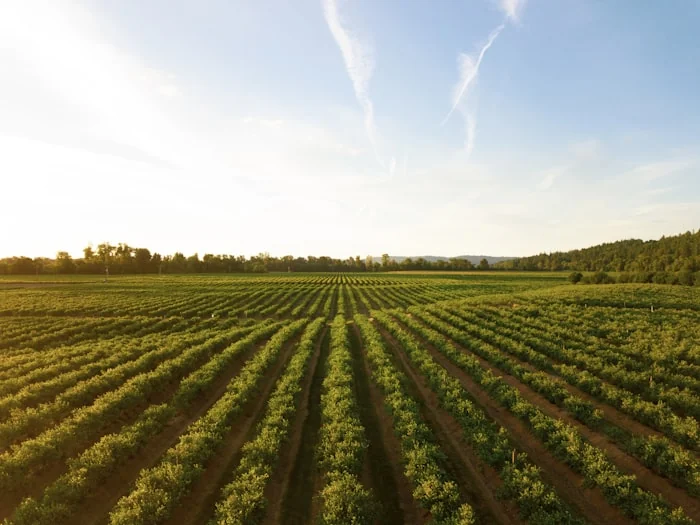
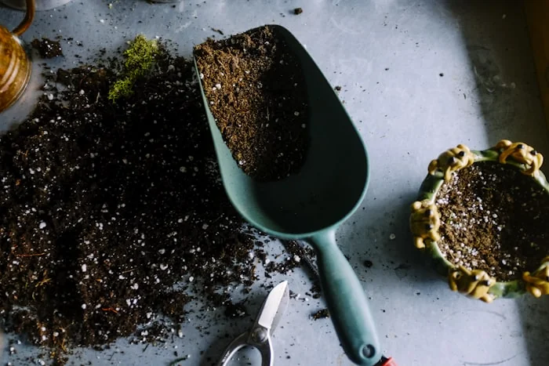
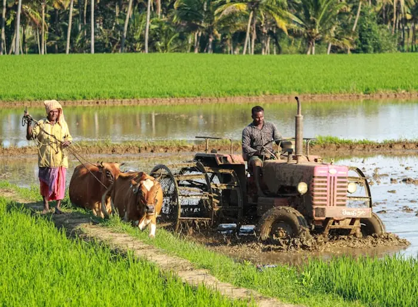
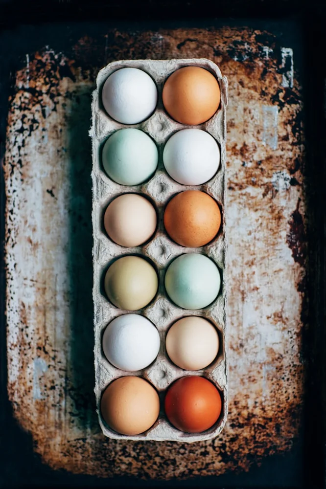
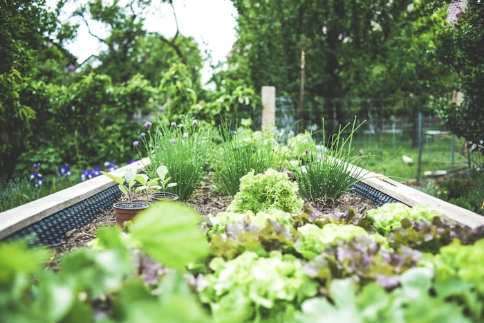
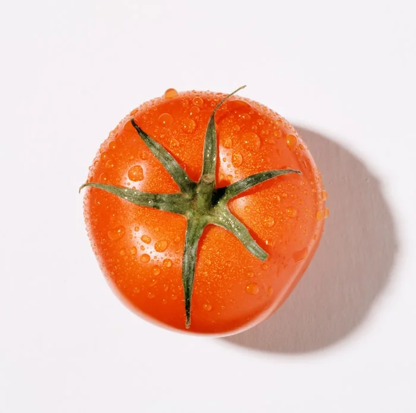
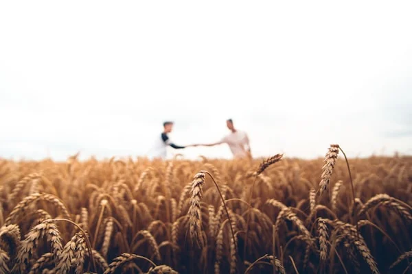
Real-time crop monitoring, zero chemical sprays, and strict soil purity checks.
Same-day harvest packing and direct farm-to-table delivery every Thursday morning.

Four-season soil rotation, cover-cropping, and natural pest balancing.
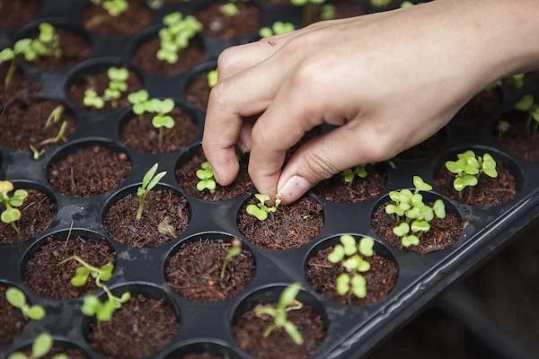
Leaving ninety acres richer for future generations through sustainable stewardship.
Track what is currently growing, ripening, and being harvested across our 90 acres in real time.
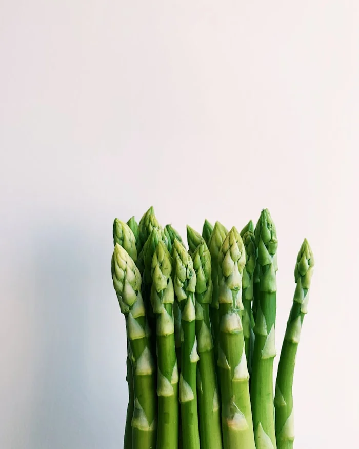
🟢 Harvest ReadyCrisp, peppery heirlooms pulled daily from Field Bed #2. Rich in natural bio-minerals.
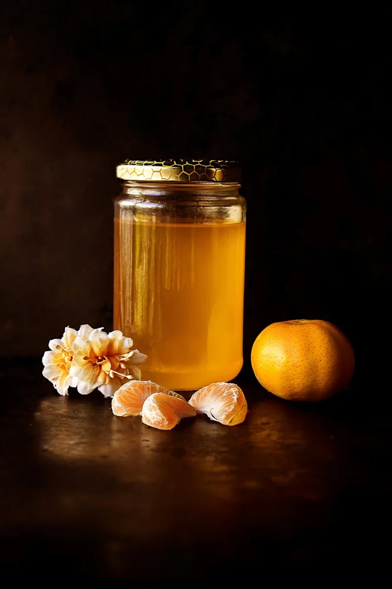
🐝 Active Honey FlowRaw, unpasteurized honey gathered from 12 wild hives nestled near our clover pastures.
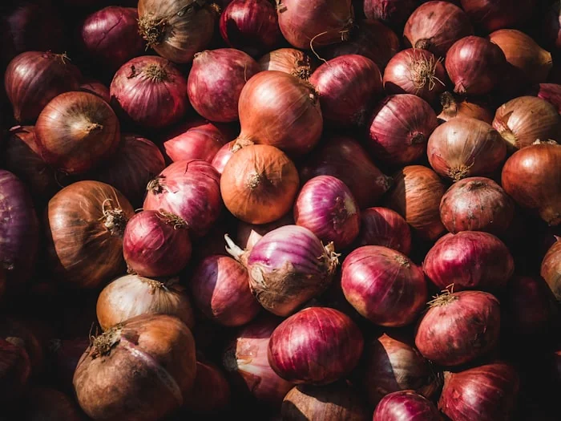
🌱 Maturing in FieldDense, sweet heritage squash curing naturally under the sun on clover straw beds.
Nutrient-dense microgreens grown in living compost trays inside solar greenhouse #1.
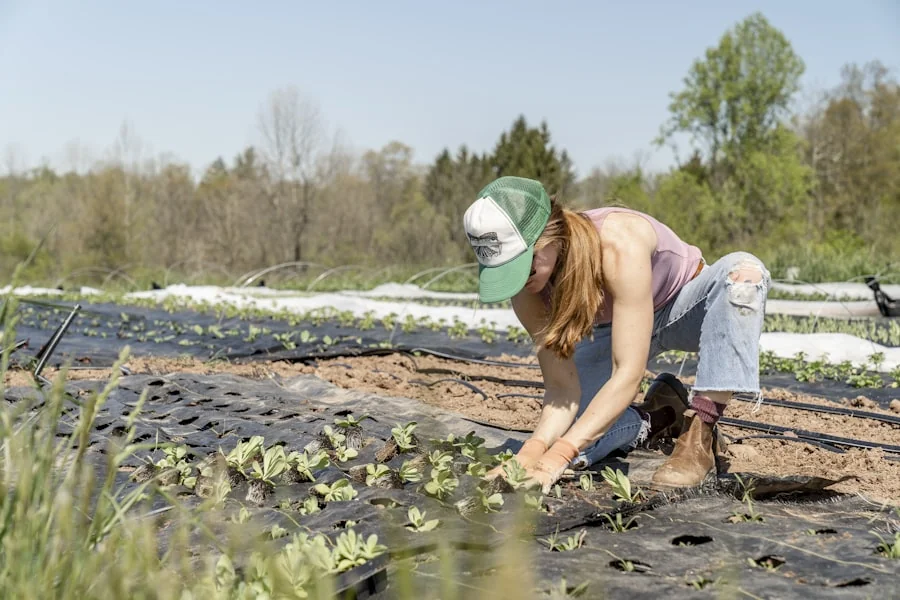
We don't just feed plants — we feed millions of beneficial soil microbes, mycorrhizal fungi, and earthworms per acre. No chemical fertilizers ever touch our earth.
Clover, vetch, and rye naturally fix atmospheric nitrogen into the root zone.
Preserving natural soil structure prevents erosion and locks carbon underground.
Honeybees pollinate over 40 varieties of heirloom fruit trees and vegetables.
100k-gallon pond system supplies 100% of our summer greenhouse drip lines.
Simple, nourishing dishes crafted with ingredients harvested fresh from our morning fields.
Slow-roasted Brandywine tomatoes, crushed garlic cloves, and garden basil drizzled with cold-pressed oil.
View Harvest Recipe →Golden hand-collected pastured eggs baked over sautéed woodland mushrooms and thyme crust.
View Harvest Recipe →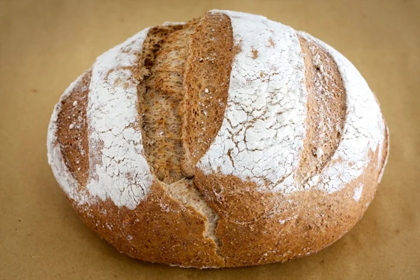
⏱️ 15 Mins ToastStone-milled Red Fife wheat bread toasted crisp and slathered with raw farm honey and sea salt butter.
View Harvest Recipe →Live micro-climate & bio-sensor feeds monitoring nitrogen fixation, soil moisture, and carbon storage across our 90 acres.
No-till soil sensors at 24cm depth.
Mycorrhizal fungi & worm density.
100% off-grid solar water pumping.
We preserve open-pollinated, non-hybrid seeds dating back to the 19th century — selected for flavor, resilience, and dense nutrition.
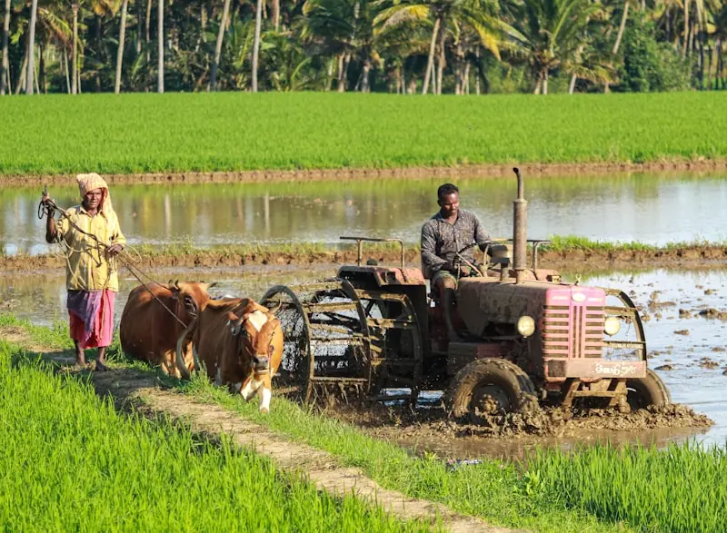
Canada’s oldest heritage baking wheat. Stone-ground into whole grain flour with rich nutty aromas.
Potato-leaf Amish heirloom renowned worldwide for its rich umami depth and sweet potato notes.
Elongated scarlet radish with crisp white tip. Harvested daily at 24 days for tender peppery bite.
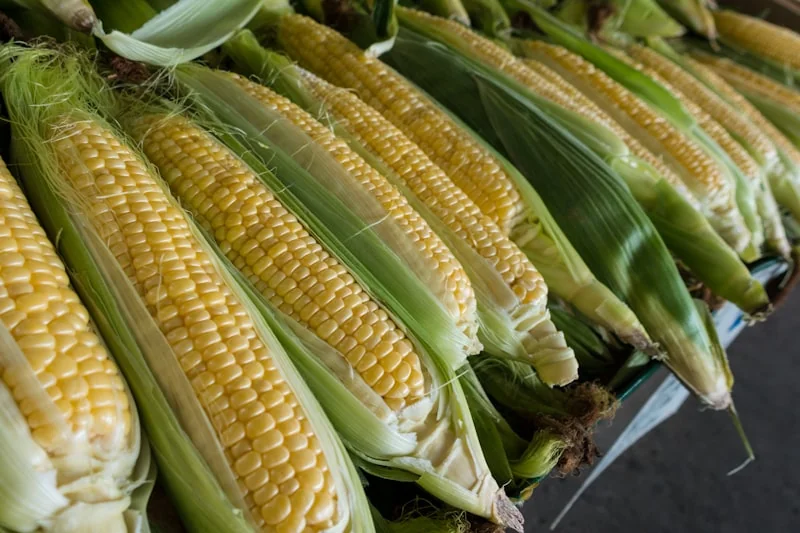
Naturally sweet yellow sweetcorn picked at dawn before field heat converts natural sugars into starch.
By integrating solar drip lines, compost carbon sinking, and zero synthetic fertilizers, we give back more to the earth than we take.
Through cover cropping and deep root sequestration, our soil locks away 142 metric tons of atmospheric CO₂ every single year.
Our entire irrigation pumping system runs on clean solar photovoltaic arrays installed over pasture boundaries.
Zero chemical pesticides or synthetic nitrogen sprays used across all 90 acres since 1989.
Drag the sliders below to calculate the environmental impact of transitioning land to no-till organic stewardship.
Based on Willow Valley soil core samples gathered by our soil science team since 1989.
Our honeybees forage across wild clover pastures, fruit tree orchards, and lavender borders — crafting raw, unpasteurized honey rich in natural enzymes.
Light golden honey gathered from May clover blooms. Smooth, delicate sweetness.
Aromatic honey infused naturally with wild lavender and sage nectar.
Robust, dark amber honey harvested before bees settle into winter cluster.
Pure virgin honeycomb cut directly from pasture hive frames with zero heating.
Click any gold location pin to inspect field operations, solar arrays, and livestock runs across our ninety acres.
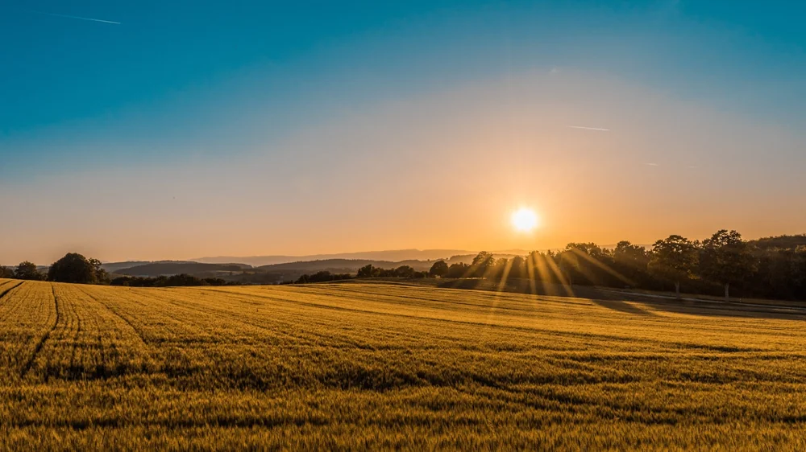
Double-walled solar glass house growing winter microgreens and heirloom tomato starts.

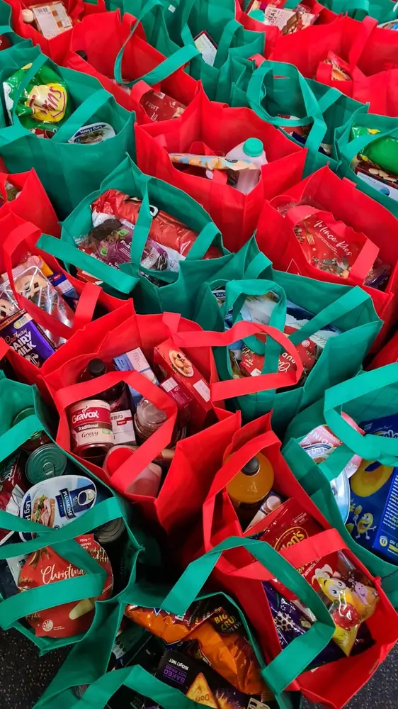
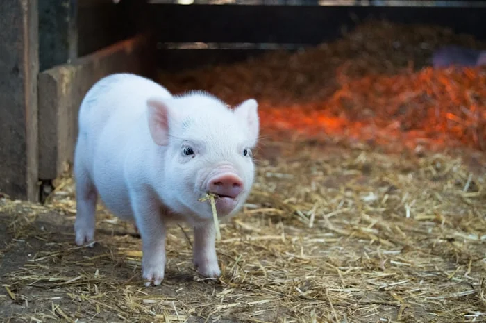

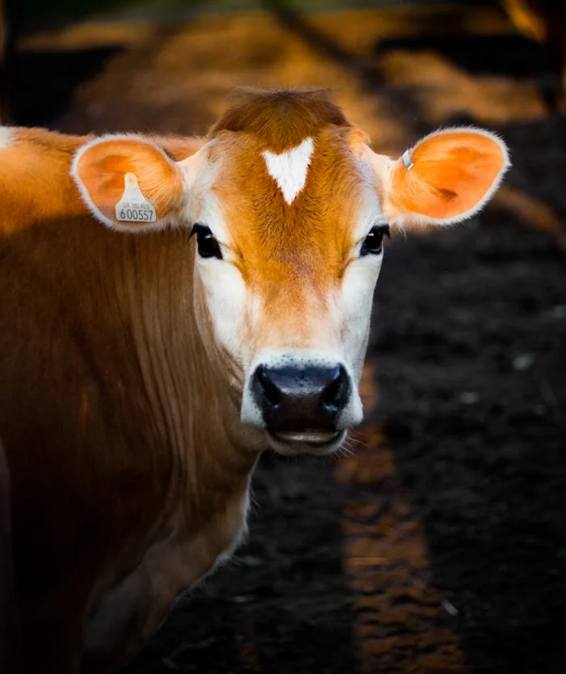
Stackly started as thirty acres and a hand-me-down tractor. Today it's ninety acres of heritage grain, market vegetables, and pastured hens — still worked with the same rule Great-Aunt Nell set in 1989: leave the soil richer than you found it.
Nothing about farming is a straight line. Here's what actually happens across a year at Stackly.
Cover crops turned under, beds broken, heritage wheat and early greens seeded by hand across the east field.
Tomatoes stake out, hens rotate through fresh paddock, and the CSA boxes start filling every Thursday morning.
Grain harvest, root vegetables lifted, and the whole crew works sunup to sundown before first frost.
Fields rest under cover crop, tools get mended, and next year's rotation gets planned at the kitchen table.